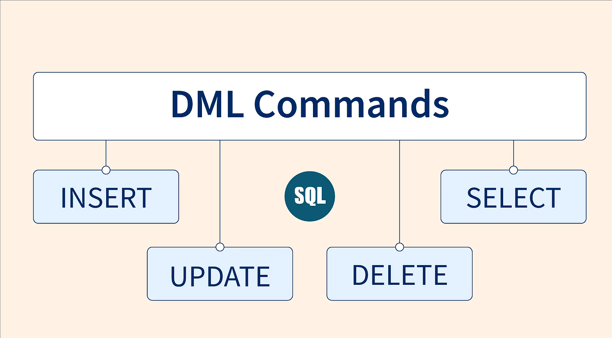
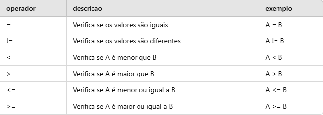
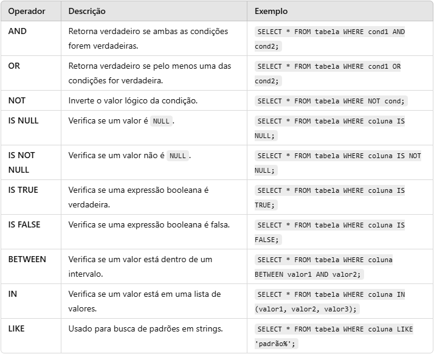
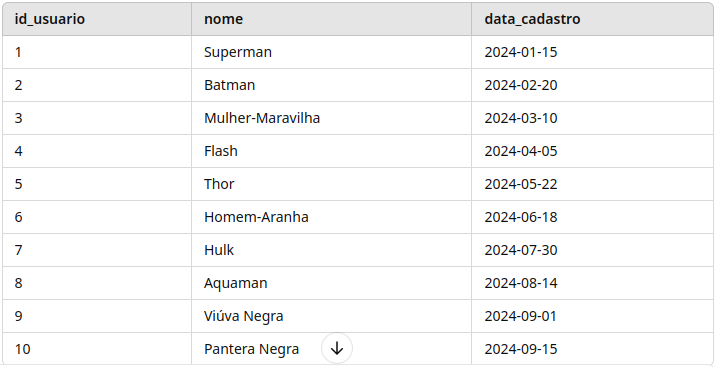
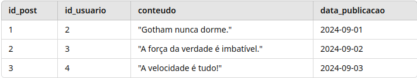

---
displayMode: compact
config:
theme: dracula
themeVariables:
primaryColor: '#8be9fd'
primaryTextColor: '#282a36'
lineColor: '#f1fa8c'
---
graph LR
A["DML"] --> B["INSERT"]
A --> C["UPDATE"]
A --> D["DELETE"]
A --> E["SELECT"]

Vamos aprofundar a manipulação de dados: inserir, atualizar, remover e consultar registros com segurança.
Meta: sair do “rodei um comando” para “sei o efeito do comando”.
SQL é uma linguagem declarativa: você descreve o que quer, e o SGBD decide como executar.
Data Definition Language
Data Manipulation Language
Cada comando responde a uma ação comum de qualquer sistema com dados persistentes.
| Operação | Verbo SQL | Pergunta prática |
|---|---|---|
| Create | INSERT | Como adiciono novos registros? |
| Read | SELECT | Como recupero dados? |
| Update | UPDATE | Como corrijo ou recalculo valores? |
| Delete | DELETE | Como removo registros sem quebrar relações? |
Ideia da aula: DML muda ou lê o estado da tabela. O risco quase sempre está no escopo: quais linhas serão afetadas?
O INSERT adiciona linhas novas em uma tabela.
Quando várias linhas têm a mesma estrutura, podemos inserir tudo em um comando.
Boa prática: informe explicitamente as colunas. Isso deixa o comando legível e menos dependente da ordem física da tabela.
Valores automáticos são ótimos para a aplicação, mas podem atrapalhar restauração manual.
Risco: executar duas vezes um INSERT sem informar o ID pode duplicar dados sem perceber.
Ao informar a chave primária, a segunda execução falha por ID duplicado. Nesse caso, o erro protege a consistência.
O UPDATE altera valores em linhas existentes.
Pergunta obrigatória: quais linhas esta condição seleciona?
Sem WHERE, o comando vale para todas as linhas da tabela.
Em produção, isso costuma virar incidente.
Nem todo UPDATE precisa afetar apenas uma linha. O importante é a regra ser intencional.
Aumenta em 10% o preço de todos os produtos da categoria Eletrônicos.
Dentro do contexto da tabela, você pode usar os próprios campos para calcular novos valores.

Use operadores para transformar uma intenção em uma condição precisa.

O DELETE remove registros da tabela.
Se o WHERE for omitido, todos os registros da tabela serão removidos.
| Comando | Uso típico | Cuidado |
|---|---|---|
| DELETE | Remove linhas selecionadas | Depende de condição; pode esbarrar em FK |
| TRUNCATE | Esvazia a tabela inteira rapidamente | É uma decisão de administração de dados |
Na aula de DML, o foco é remover linhas com critério e entender o efeito sobre as relações.


A coluna posts.id_usuario aponta para um usuário.
Se houver posts apontando para esse usuário, o banco protege a integridade referencial.
Ele impede que um registro filho fique “órfão”.
Uma FK pode ser criada para apagar automaticamente os registros dependentes.
Cuidado: cascade transforma um delete pequeno em vários deletes automáticos.
O SELECT recupera dados de uma ou mais tabelas.
Antes de alterar ou apagar, use SELECT para enxergar o conjunto de linhas que você está selecionando.
| Recurso | Para que serve |
|---|---|
| ORDER BY | Ordenar resultados |
| GROUP BY | Agrupar linhas e resumir dados |
| COUNT, SUM, AVG | Calcular agregações |
| HAVING | Filtrar grupos |
| UNION | Combinar resultados |
| LIMIT | Restringir quantidade de linhas |
Regra de ouro: antes de alterar ou apagar, use um SELECT para confirmar quais linhas serão afetadas.
Prof. Caio Hamamura